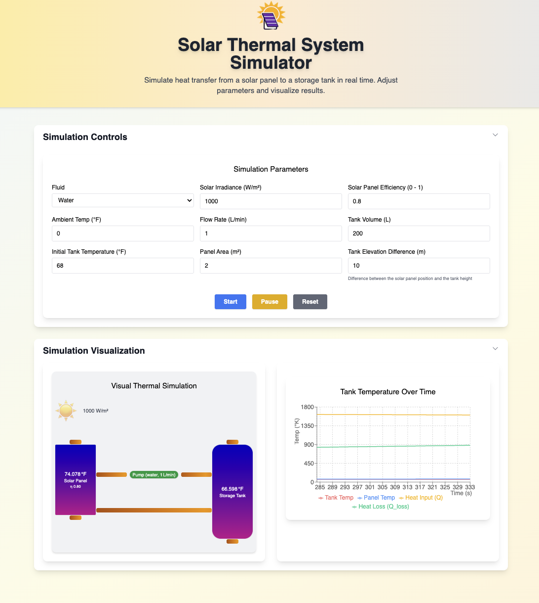

Physics Simulator Coding Exercise Test Live Here
🖥️ Watch the demo Watch Demo on Youtube

Video: Video of the solar thermosiphon fluid heater system showing the Sun, Solar Panel, Pump, and Storage Tank in a closed-loop heat transfer system exposed to environmental conditions.
See link to Physics Simulator Coding Exercise
🛠️ Project Overview This project simulates heat transfer in a solar thermosiphon fluid heater system, modeling the flow of energy from a solar panel to a storage tank via a circulating fluid. The simulation is interactive, allowing users to adjust system parameters and visualize the results in real time.
🚀 Usage Instructions
Install Node:
Installed Node (tested with node V20) on your computer.Install dependencies:
From the folder root runyarn install # or npm install
Copy Start the development server: yarn # or npm start
Copy Open in your browser:
Visit http://localhost:3000 Adjust parameters in the Control Panel and press Start to run the simulation. Press Pause or Reset as needed.
🧪 Testing The project includes unit tests for physics calculations and component rendering. To run the tests:
Run all tests:
yarn test # or npm test
Copy
🌟 Features
Real-time simulation of solar thermal physicsAdjustable parameters:
Fluid type (Water or Glycol)
Solar irradiance (W/m²)
Solar panel efficiency (0-1)
Ambient temperature (°F)
Flow rate (L/min)
Tank volume (L)
Initial temperature (°F)
Panel area (m²)
Tank elevation difference (m) — positive means tank is above panel (enables gravity-driven return)
Live-updating chart of tank and panel temperatures, heat input, and heat lossResponsive, mobile-friendly, and beautiful UI (Tailwind CSS)Start, Pause, and Reset simulation controlsPhysics-based calculations for heat transfer and energy balanceDynamic color visualization of temperature changes in panel and tankAutomatic panel management for optimal viewing experience
🖥️ UI/UX
Header: Project title and descriptionControl Panel: Inputs for all simulation parameters, with clear labels and units
Includes 'Tank Elevation Difference (m)' to model gravity/thermosiphon return
Visualization Panel:
Interactive diagram showing system components with temperature-based color gradients
Real-time temperature display for panel and tank
Solar irradiance visualization
Chart Panel: Responsive line chart (Recharts) showing:
Tank temperature over time
Panel temperature over time
Heat input (Q)
Heat loss (qLoss)
Buttons: Start, Pause, and Reset for simulation controlAccordion Panels: Collapsible sections for controls and visualization
⚙️ Implementation Details Tech Stack
Framework: React 18 + TypeScriptStyling: Tailwind CSSCharts: RechartsForms: react-hook-formState Management: useReducer, useRef, useStateIcons: @heroicons/react
Folder Structure src / components / # UI components ( Header , ControlPanel , ChartPanel ) hooks / # useSimulation custom hook models / # Physics models ( Fluid , SolarPanel , Pump , StorageTank , Environment ) types / # Shared types / interfaces utils / # Physics formulas
Copy Simulation Flow
The simulation models a thermosiphon fluid heater system, the top pipe is pump-driven and the bottom pipe as a passive return:
If the pump is ON (flow rate > 0), flow is as set by the user.
If the pump is OFF (flow rate = 0), the simulation checks for passive return:
If the tank is above the panel (positive elevation difference), gravity-driven flow is enabled.
If the panel is hotter than the tank, thermosiphon flow is enabled.
Otherwise, flow is zero and heat transfer stops.
Initialize Parameters: Fluid, irradiance, efficiency, ambient temp, flow rate, tank volume, initial temp, panel area, tank elevation difference Start Simulation Loop: 1-second ticks, updating system stateOn Each Tick:
Compute heat input from the sun
Compute heat loss to the environment using dynamic heat transfer coefficient
Calculate mass flow rate from flow rate and fluid density
Calculate panel outlet temperature
Calculate energy delivered to the tank
Update tank and panel temperatures
Store results for charting
Display Results:
Live chart updates
Dynamic color gradients in panel and tank visualization
Real-time temperature displays
Key Variables
Irradiance (W/m²): Solar power per unit areaEfficiency (0-1): Base efficiency of the solar panel at reference temperaturePanel Area (m²): Surface area of the solar collectorAmbient Temp (°F): Outside temperature in Fahrenheit (also the initial temperature of the panel)Flow Rate (L/min): Pump flow rate of the fluidTank Volume (L): Storage capacityInitial Temp (°F): Starting temperature in FahrenheitFluid Properties: Specific heat (J/kg·°F), density (kg/m³)
Temperature-Dependent Properties 1. Air Properties All air properties are calculated based on the film temperature (average of panel and ambient temperatures):
// Air density (kg/m³) using ideal gas law ρ = P /( R * T ) // P = 101325 Pa, R = 53.35 ft·lbf/(lb·°R) // Air viscosity (kg/(m·s)) using Sutherland's formula μ = μ ₀ * ( T ₀ + S )/( T + S ) * ( T / T ₀)^ 1.5 // where S = 198.72°R, T₀ = 491.67°R, μ₀ = 1.716e-5 kg/(m·s) // Air thermal conductivity (W/(m·°F)) k = k ₀ + slope * T // where k₀ = 0.0242 W/(m·°F), slope = 7.7e-5 W/(m·°F²) // Prandtl number Pr = 0.713 - 0.0001 * T
Copy 2. Solar Panel Properties Panel efficiency decreases with temperature and thermal mass scales with area:
// Panel efficiency η = η ₀ * ( 1 + β * ( T - T_ref )) // where β = -0.00222 °F⁻¹ (temperature coefficient) // T_ref = 77°F (reference temperature) // Panel thermal mass panelMass = PANEL_MASS_PER_M2 * area // where PANEL_MASS_PER_M2 = 10 kg/m² // specific heat = 900 J/(kg·°F) for aluminum/glass construction
Copy 1. Mass Flow Rate flowRate_m3s = flowRate / 1000 / 60 massFlowRate = flowRate_m3s * density
Copy Q = irradiance * η * area // where η is temperature-dependent efficiency
Copy 3. Heat Transfer Coefficient (h) // Using Churchill-Chu correlation for natural convection Gr = ( g * β * ΔT * L ³) / ν ² Ra = Gr * Pr Nu = 0.68 + ( 0.67 * Ra ^ 0.25 ) / ( 1 + ( 0.492 / Pr )^( 9 / 16 ))^( 4 / 9 ) h = ( Nu * k ) / L + forced_convection // where forced_convection = 5.7 + 3.8 * windSpeed
Copy 4. Heat Loss to Environment qLoss = h * area * ( T_panel - T_ambient )
Copy Q_net = Q - qLoss
Copy 6. Panel Temperature Change // Panel temperature change considers thermal mass ΔT_panel = Q_net / ( panelMass * panelSpecificHeat ) newPanelTemp = panelTemp + ΔT_panel
Copy 7. Fluid Temperature Change in Panel ΔT_fluid = Q_net / ( massFlowRate * fluidSpecificHeat ) panelOutletTemp = newPanelTemp + ΔT_fluid
Copy 8. Energy Delivered to Tank Q_delivered = massFlowRate * specificHeat * ( panelOutletTemp - tankTemp )
Copy 9. Tank Temperature Update ΔT_tank = Q_delivered / ( fluidMass * specificHeat ) newTankTemp = tankTemp + ΔT_tank
Copy 🧪 Physics Assumptions
The tank is well-mixed (no stratification)
All net heat from the panel is transferred to the fluid
The pump provides constant flow (no head loss modeled)
Air properties are calculated at the film temperature
Solar panel efficiency decreases with temperature
Panel thermal mass scales with area (10 kg/m²)
Natural convection is modeled using Churchill-Chu correlation
A small forced convection component simulates light wind
⏱️ Simulation Duration & Stopping
The simulation will run indefinitely, updating the chart in real time, until you press Pause or Reset .
There is currently no automatic stopping condition (such as a maximum time or temperature).
For long simulations, consider pausing or resetting to conserve browser resources.
📝 Notes & Tips
Changing parameters: You must press Start after changing parameters for the new values to take effect.Flow rate: Affects how quickly the tank heats up and the temperature difference between the panel and tank.
If set to zero, passive return is possible only if the tank is above the panel or the panel is hotter than the tank.
Try extreme values: Set flow rate very low or high to see different system behaviors.Chart: Tank temperature, panel temperature, heat input, and heat loss are all plotted for insight.Visualization: The color gradient in the panel and tank changes from blue (cold) to red (hot) as temperature increases.Panel Management: The control panel automatically closes when simulation starts, and the visualization panel opens automatically.
Fluid Properties The simulation supports multiple heat transfer fluids with the following properties:
Currently Used Properties
Specific Heat (J/(kg·K)) : Used to calculate temperature changes in the fluidDensity (kg/m³) : Used to calculate buoyancy forces and flow ratesViscosity (kg/(m·s)) : Used to calculate flow resistance and critical startup temperature
Properties Not Currently Modeled
Thermal Conductivity (W/(m·K)) : Not currently used in heat transfer calculationsFreezing Point (°F) : Not currently checked in the simulationBoiling Point (°F) : Not currently checked in the simulation
Available Fluids
Water
Lowest viscosity
Highest specific heat
Best for moderate temperature ranges
Ethylene Glycol
Higher viscosity than water
Lower freezing point
Good for cold climates
Mineral Oil
Highest viscosity
Highest boiling point
Good for high-temperature systems
Silicone Oil
Very high viscosity
Wide temperature range
Good for extreme conditions
Propylene Glycol
Medium viscosity
Low freezing point
Food-safe alternative to ethylene glycol
📄 License None